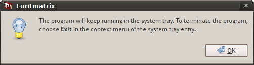

Lorsque vous modifiez votre collection de polices ou basculez fréquemment entre les jeux de polices disponibles, il n'est probablement pas très logique de garder la fenêtre Fontmatrix ouverte en permanence. Vous pouvez donc fermer la fenêtre principale dans la zone de notification et effectuer certaines actions à partir de là.
L'option Afficher Fontmatrix dans la zone de notification active ou désactive l'ensemble des fonctionnalités liées à la zone de notification.
Si vous activez la case à cocher Fermer dans la zone de notification, chaque fois que vous cliquez sur le bouton de fermeture de la fenêtre principale, Fontmatrix se masquera dans la zone de notification. La première fois que vous le faites, un message d'avertissement s'affichera.

Vous avez deux façons de restaurer la fenêtre principale : soit en cliquant une seule fois avec le bouton gauche de la souris sur l'icône de Fontmatrix dans la zone de notification, soit en cliquant droit dessus et en choisissant ensuite l'élément de menu "Restaurer". L'élément de menu "Minimiser" fermera la fenêtre principale dans la zone de notification.
L'option Démarrer minimisé dans la zone de notification est utile lorsque vous souhaitez que Fontmatrix soit toujours disponible pour gérer votre collection, mais que vous n'en avez pas besoin immédiatement au démarrage.
L'option Afficher les actions "Tout" ajoute deux éléments au menu de la zone de notification. Ce sont "Activer tout" et "Désactiver tout". Aussi explicites que ces noms soient, ils rendent toutes les polices connues de Fontmatrix soit disponibles, soit non disponibles dans le système.
L'option Demander confirmation lors de l'activation ou de la désactivation de toutes les polices, liée à l'option précédente, devrait plutôt être désactivée à moins que vous ne sachiez vraiment ce que vous faites.
L'option Demander confirmation lors de l'activation ou de la désactivation de polices par étiquettes fera en sorte que Fontmatrix vous demande confirmation lorsque vous rendez un ensemble de polices regroupées par étiquettes visible ou invisible dans le système. Lorsque vous faites un clic droit sur l'icône de l'application dans la zone de notification, toutes les étiquettes disponibles sont listées dans le sous-menu "Étiquettes". Consultez le chapitre sur les étiquettes pour plus de détails.